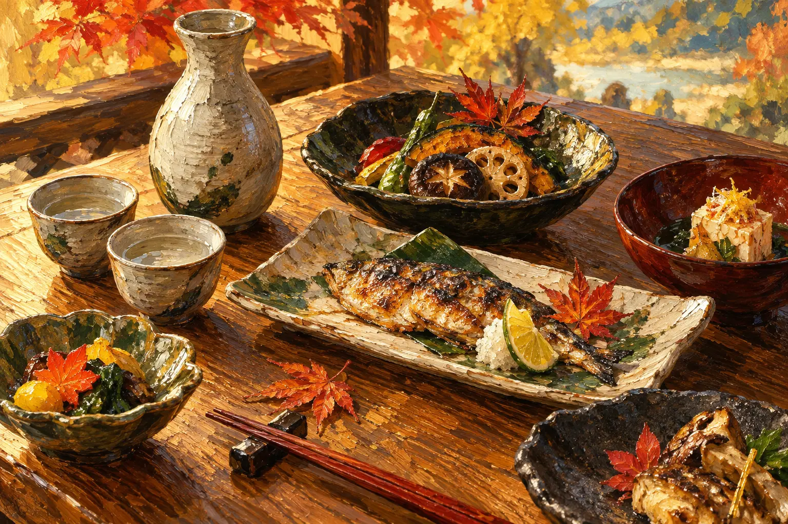
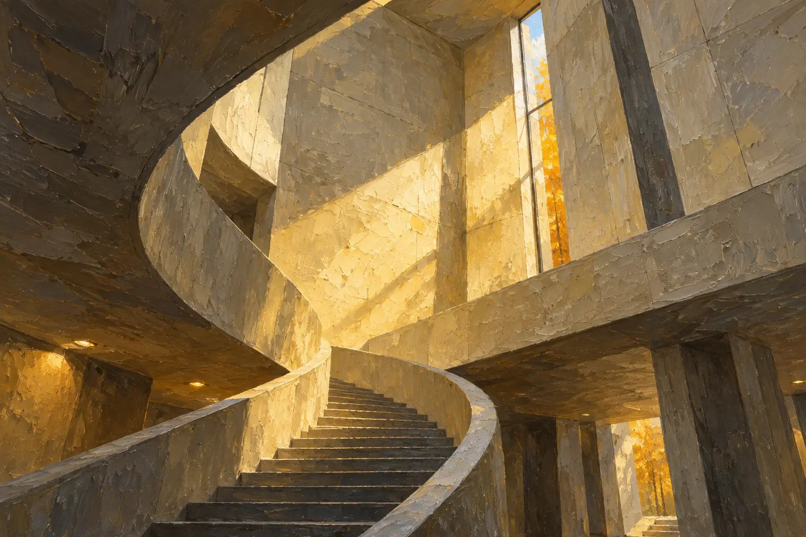
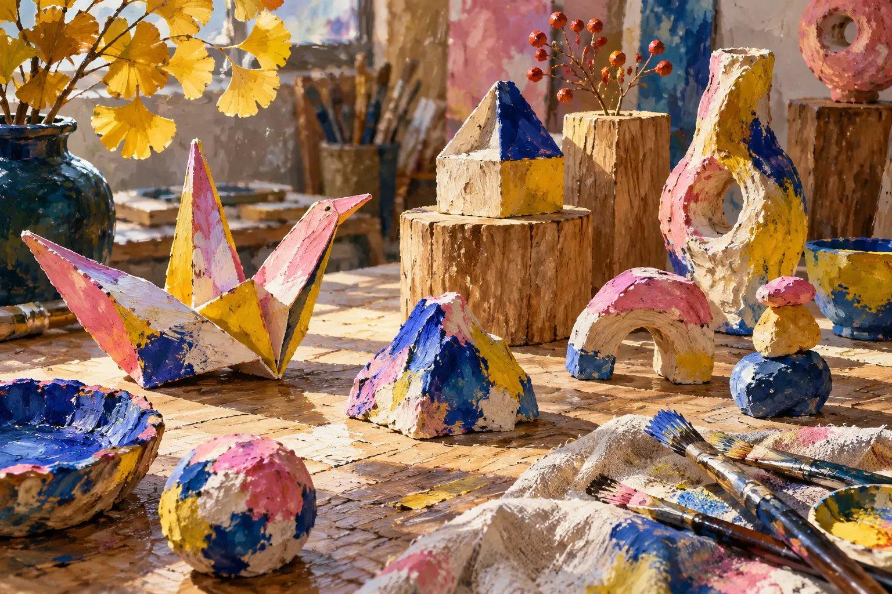
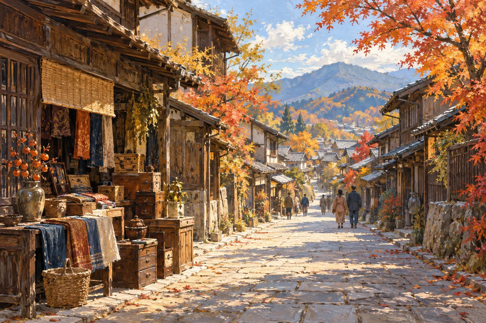
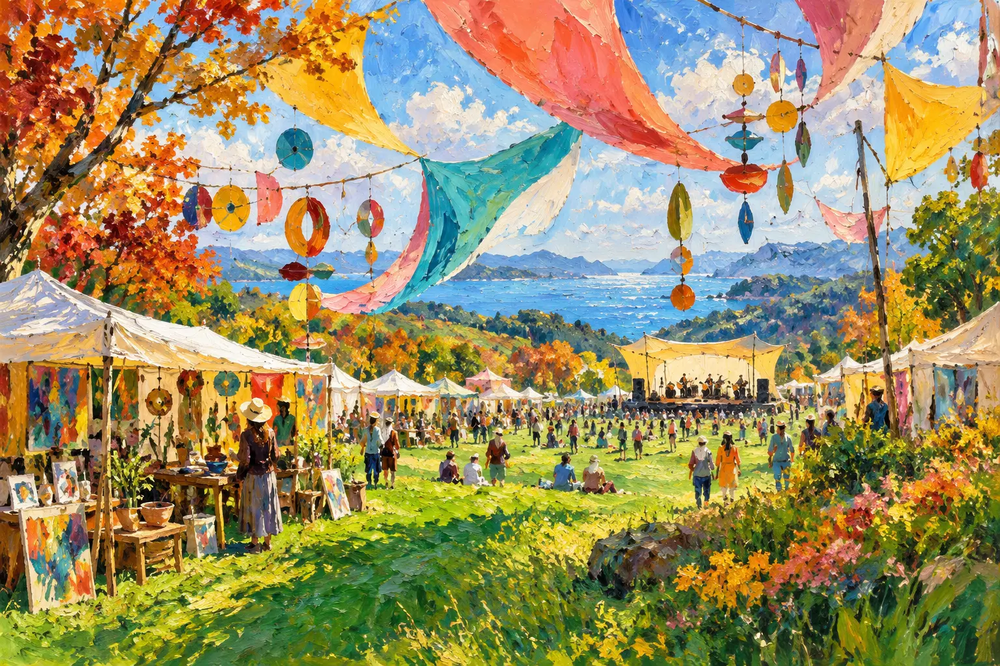
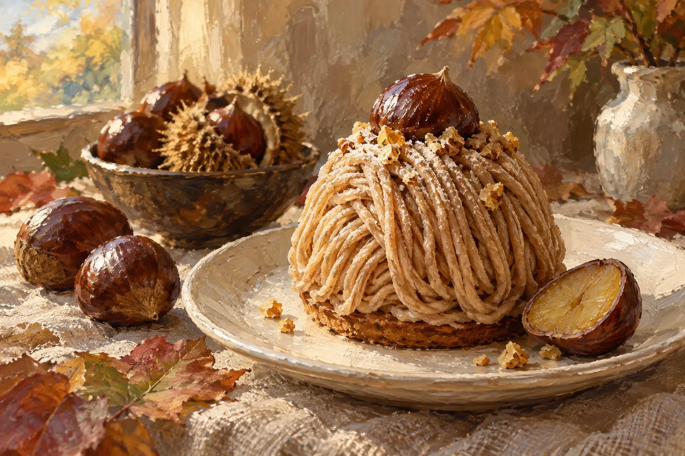
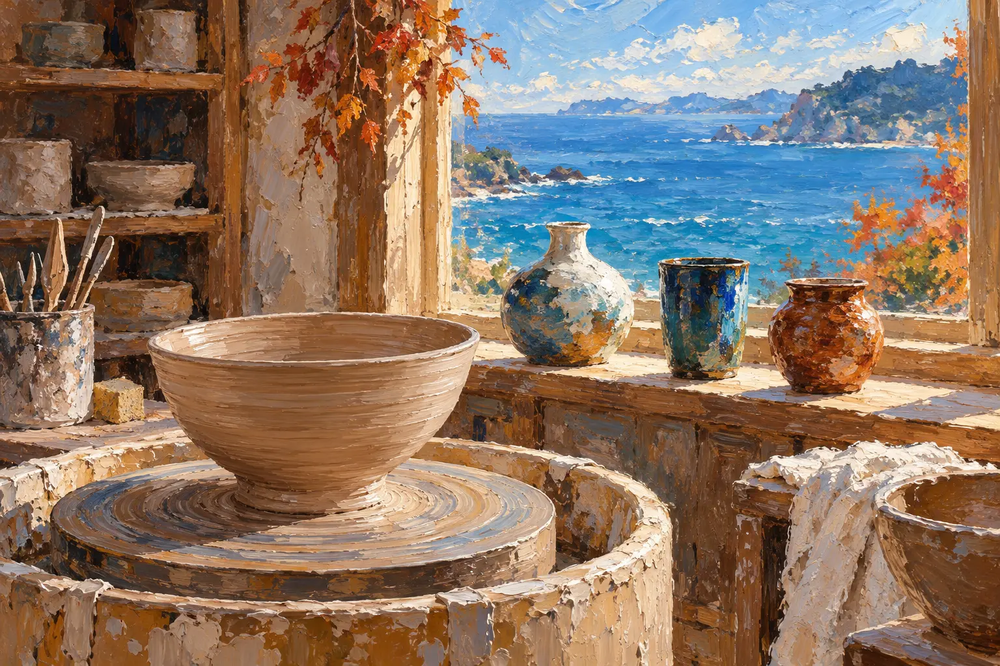

この熱気に、会いに行く。
長崎くんち
諏訪神社・お旅所・中央公園・八坂神社ほか、長崎市内
開催情報の掲載元 主催者・公式
長崎くんち公式サイト ↗開催情報の確認日：2026-09-11RAMEN TECH本会期は10/7〜11。前後10日に、Garraway Fの関連期間に合わせた9/21〜26も加えて紹介。掲載イベントの全会期は、各カード・詳細に表示しています。
秋の寄り道を見つける ↓PICK YOUR NEXT EXPERIENCE
福岡でふらっと。九州へ、ひと足。
長崎くんち
諏訪神社・お旅所・中央公園・八坂神社ほか、長崎市内
開催情報の掲載元 主催者・公式
長崎くんち公式サイト ↗開催情報の確認日：2026-09-11ART FAIR ASIA FUKUOKA 2026
福岡国際センター｜福岡市博多区築港本町2-2
開催情報の掲載元 主催者・公式
ART FAIR ASIA FUKUOKA 公式サイト ↗開催情報の確認日：2026-09-11INSPIRATION by SUNSET LIVE
INN THE PARK 福岡｜海の中道海浜公園・光と風の広場キャンプ場
開催情報の掲載元 主催者・公式
INSPIRATION by SUNSETLIVE 公式サイト ↗開催情報の確認日：2026-09-11MUSIC CITY TENJIN 2026
福岡市役所西側ふれあい広場ほか、天神エリア各所

2026 / EVENT DATE09.26 — 27&SAKE FUKUOKA 2026
福岡国際センター｜福岡市博多区築港本町2-2
開催情報の掲載元 主催者・公式
&SAKE FUKUOKA 公式サイト ↗開催情報の確認日：2026-09-11The Creators 2026
10/10・11：UNITEDLAB ／ 10/12：ソラリアプラザ1F ゼファ
開催情報の掲載元 主催者・公式
The Creators 公式サイト ↗開催情報の確認日：2026-09-11第30回 博多灯明ウォッチング
冷泉・御供所・奈良屋・大浜、博多リバレイン、博多駅周辺ほか
開催情報の掲載元 主催者・公式
博多灯明ウォッチング公式サイト ↗開催情報の確認日：2026-09-11
2026 / EVENT DATE10.03FAF建築文化祭 ―福岡銀行本店の魅力再発見―
福岡銀行本店・FFGホール｜福岡市中央区天神2-13-1
開催情報の掲載元 主催者・公式
FAF 建築文化祭 公式案内 ↗開催情報の確認日：2026-09-11FaN Week 2026
福岡市美術館、Artist Cafe Fukuoka、ONE FUKUOKA BLDG.ほか
開催情報の掲載元 主催者・公式
FaN Week 2026 公式サイト ↗開催情報の確認日：2026-09-11
2026 / EVENT DATE09.19 — 22SICF Fukuoka
ONE FUKUOKA BLDG. 6F カンファレンスホール
開催情報の掲載元 主催者・公式
SICF Fukuoka 公式サイト ↗開催情報の確認日：2026-09-11風の市場 〜筥崎宮蚤の市〜
筥崎宮参道｜福岡市東区箱崎
開催情報の掲載元 メディア
Fukuoka Now｜筥崎宮蚤の市 開催紹介 ↗開催情報の確認日：2026-09-11SYNAPSE FESTIVAL 2026
INN THE PARK 福岡／海の中道海浜公園 光と風の広場
開催情報の掲載元 メディア
Fukuoka Now｜SYNAPSE FESTIVAL 開催紹介 ↗開催情報の確認日：2026-09-11マイナビ ツール・ド・九州2026
佐世保、唐津〜福岡、豊後大野〜竹田〜南阿蘇、日南など各ステージ
開催情報の掲載元 主催者・公式
ツール・ド・九州 公式サイト ↗開催情報の確認日：2026-09-11第5回 SAGA酒まつり
唐津市ふるさと会館アルピノ 中央半野外スペース
開催情報の掲載元 主催者・公式
ツール・ド・九州 佐賀応援イベント案内 ↗開催情報の確認日：2026-09-11
2026 / EVENT DATE10.11城下町まちかど蚤の市
竹田市城下町通り（下本町通り・構口通り）
開催情報の掲載元 主催者・公式
ツール・ド・九州 大分応援イベント案内 ↗開催情報の確認日：2026-09-11
2026 / EVENT DATE10.17 — 18佐賀さいこうフェス2026
佐賀城内エリア（佐賀県立博物館・美術館前）
開催情報の掲載元 主催者・公式
佐賀さいこうフェス 公式サイト ↗開催情報の確認日：2026-09-11福岡オクトーバーフェスト2026
冷泉公園｜福岡市博多区上川端町
2026年の詳細発表待ち

2026 / EVENT DATE09.01 — 11.30くまもと山鹿和栗スイーツフェア2026
山鹿市内の参加42店舗
開催情報の掲載元 主催者・公式
やまが和栗スイーツフェア 公式サイト ↗開催情報の確認日：2026-09-11
2026 / EVENT DATE10.09 — 13第37回 天草西海岸「秋の窯元めぐり」
苓北町・天草市天草町の各窯元
開催情報の掲載元 観光案内
熊本県公式観光サイト｜天草西海岸秋の窯元めぐり ↗開催情報の確認日：2026-09-11エリアや期間を変えて、次の寄り道を探してみてください。
MAKE IT A TRIP.
RAMEN TECHの予定と往復の移動を、トリッププランナーで。
Garraway Fが独自に編集する非公式ガイドです。RAMEN TECH主催者、掲載イベントの主催者、参照先との提携・公認を示すものではありません。
福岡の企画選びには Fukuoka Now「福岡秋のガイド2026」 を参照しています。開催日などの情報源を各カード・詳細と下の一覧に表示。主催者公式情報とメディア・観光情報の掲載元を区別しています。紹介文は本特集のために編集しています。
開催情報の確認日：2026年9月11日。画像の更新日は、イベント情報の再確認日ではありません。すべてのイベントを網羅するものではなく、開催変更、料金、予約、残席、休館日は各主催者の最新案内でご確認ください。
この特集のイベントは、RAMEN TECHのマイ予定には直接追加されません。各開催案内で参加方法をご確認ください。